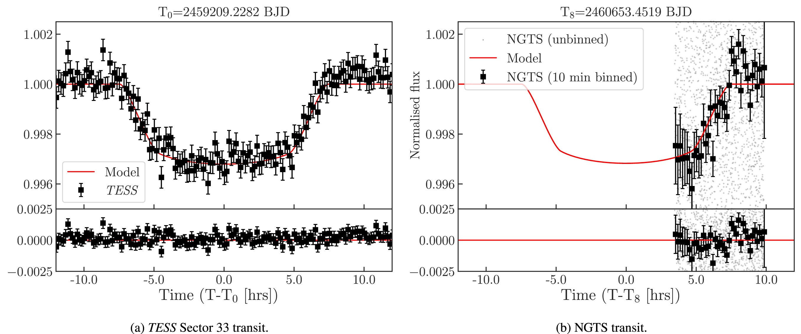
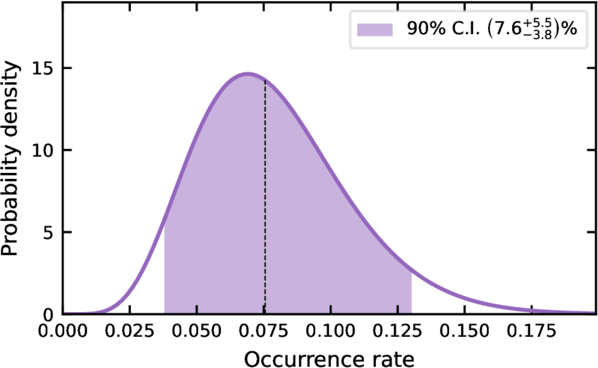
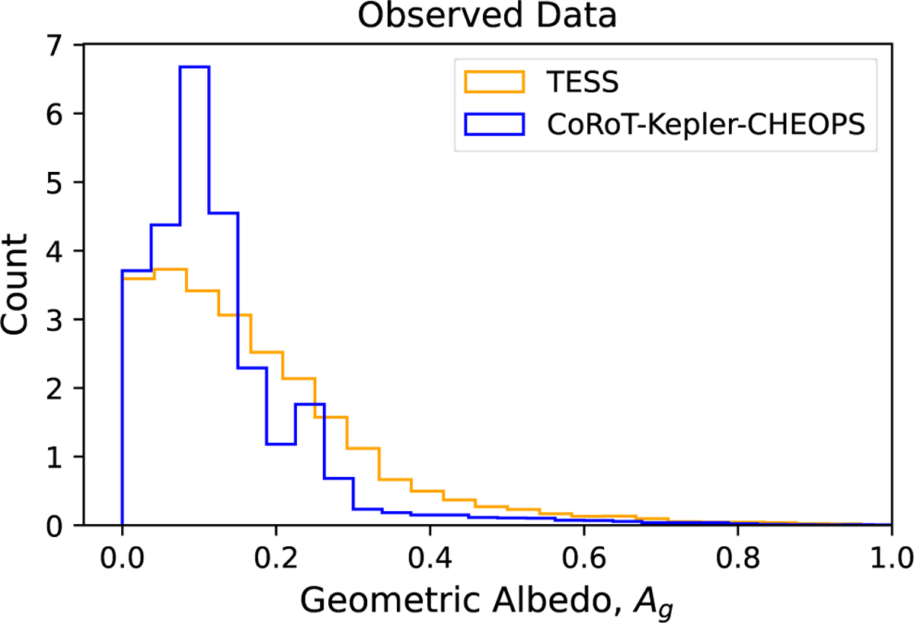

Welcome TESS followers to our latest news bulletin!1
Today we have a special giant planets edition of the TESS news bulletin, where we highlight some recent TESS results for Jovian systems. Enjoy!
First off, we highlight an exciting new warm super-Jupiter system. Researchers have discovered TIC-65910228 b / NGTS-38 b, a gas giant exoplanet with 4.77 times the mass of Jupiter and a 180.5-day orbital period. The planet's wide separation from its large F-type host star results in a temperate environment, and makes this planet a promising candidate to host a detectable moon or ring system.
Of course, close-in giants are also a hot topic in exoplanet demographics. By carefully searching through TESS data, scientists determined that about 7.6% of massive, close-in exoplanets known as "hot Jupiters" have smaller planetary neighbors. The survival of these neighbors proves that at least some of these giant planets arrived at their extreme orbits through a gentle process rather than a violent and chaotic one.
Finally, we are starting to understand more about the atmospheres of these systems. Researchers analyzed data from several space telescopes, including TESS, to measure the fraction of light reflected by hot, giant exoplanets. The study found no statistical difference in reflectivity when comparing the TESS data at redder optical wavelengths with observations from other telescopes across different wavelengths, demonstrating that a planet's brightness is primarily controlled by the overall abundance of light-absorbing chemicals in its atmosphere.
TIC-65910228 b / NGTS-38 b, a 180 day transiting warm super-Jupiter (Rodel, T. et al, 2026).
The recently discovered exoplanet TIC-65910228 b (NGTS-38 b) is a transiting warm super-Jupiter with a mass 4.77 times that of Jupiter and a 180.5-day orbital period. TESS discovered the initial single transit event during its Sector 33 observations (see Figure 1), and subsequent ground-based observations confirmed the orbital period and characterized the system. In the context of the broader exoplanet population, NGTS-38 b is notable because well-characterized, transiting gas giants with orbital periods exceeding 100 days are observationally uncommon. Because of its wide orbital separation (a=0.7 AU) and the relative brightness of its host star (Tmag = 9.7), this system provides a practical, well-constrained target for future empirical studies addressing migration mechanisms and atmospheric composition. In addition, this planet is located in the Long-duration Observation Phase field at South 2 (LOPS2) field of the upcoming PLATO mission, which will enable the search for additional companions within the system.
The Occurrence Rate of Nearby Planetary Companions to Hot Jupiters (Sha, L. et al, 2026).
In a recent study investigating the origins of hot Jupiters — massive gas giants orbiting very close to their host stars — researchers determined that approximately 7.6% of these planets possess nearby planetary companions. To produce these demographic results, the team analyzed five years of light curve data from TESS, conducting a uniform box least-squares search for secondary transit signals around nearly 2,000 hot Jupiter candidates. They then applied a Bayesian statistical framework combined with injection-recovery simulations of 10,000 hypothetical planets per system to rigorously correct for observational biases, such as the geometric likelihood of a planet's orbit crossing the star and the software's detection efficiency. The primary outcome of this analysis is captured in Figure 2, which illustrates the posterior probability distribution of the occurrence rate and demonstrates the statistical confidence of their results. Ultimately, because violent orbital migration (high-eccentricity migration or HEM) would disrupt and destroy any close-in neighboring planets, the survival of these companions provides a crucial lower limit on the fraction of planets that have undergone HEM. Conversely, this demonstrates that a notable fraction of hot Jupiters must have arrived at their current locations through dynamically peaceful formation pathways, such as smooth disk migration or in-situ formation.
The effect of atmospheric chemistry on the optical geometric albedos of hot Jupiters (Jones, Morris, and Heng, 2026).
In a recent study investigating the reflectivity — or geometric albedo — of hot Jupiter exoplanets, researchers sought to understand how atmospheric chemistry influences the amount of starlight these giant worlds reflect back into space. The study was carried out by curating a comprehensive sample of observed exoplanet eclipse depths, carefully removing the planets' own thermal heat emissions to isolate purely reflected light, and employing Bayesian statistical methods to compare these observations against theoretical models featuring chemical absorbers like water, sodium, titanium oxide, and vanadium oxide. Data from TESS played a vital role in this analysis because TESS observes at slightly longer, redder optical wavelengths compared to other telescopes used in the study (Kepler, CoRoT, and CHEOPS), allowing the researchers to test if exoplanet albedos fundamentally change across different optical bandpasses. Ultimately, the study concludes that the atmospheric composition, and particularly the abundance of atmospheric absorbers such as sodium, water, titanium oxide, and vanadium oxide, dictates a hot Jupiter's albedo.

Fig. 1: Taken from Rodel et al (2026). This figure shows the discovery light curves of NGTS-38 b from TESS (left) and NGTS (right). The data points are in black, while the best fitting transit model is shown in red. The residuals from the fit are shown in the bottom panels.

Fig. 2: Taken from Sha et al (2026). This figure shows the posterior distribution of the occurrence rate of nearby companions to hot Jupiters. The median is indicated by a dashed vertical line and the 90% credible interval is shaded.

Fig. 3: Taken from Jones et al (2026). This plot shows the distribution of observed geometric albedos from different telescopes used in this study. The geometric albedo is a value ranging from 0 (totally dark/absorbs all light) to 1 (perfectly reflecting). The authors note that while the peak feature at Ag=0.1 is not present for the TESS data, this could be a result of the wider error bars for the TESS observations which result in a smoothing in the features.
-
This news item was created with input from OpenAI / NASA GSFC, 2026 ↩